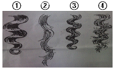
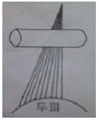
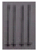
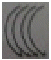
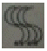
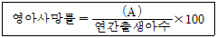

미용사(일반) (2009-09-27 기출문제)
1과목: 미용이론
1. 컬이 오래 지속되며 움직임을 가정 적게 해주는 것은?
- 논스템(non stem)
- 하프스템(half stem)
- 풀스템(full stem)
- 컬 스템(curl stem)
(정답률: 76%)

2. 다음 중 두발의 볼륨을 주지 않기 위한 컬 기법은?
- 스탠드업 컬(stand up curl)
- 플래트 컬(flat curl)
- 리프트 컬(lift curl)
- 논스템 롤러 컬(non stem roller curl)
(정답률: 54%)
3. 1940년대에 유행했던 스타일로, 네이프선까지 가지런히 정돈하여 묶어 청순한 이미지를 부각시킨 스타일이며 아르헨티나의 대통령부인이었던 에바페론의 헤어스타일로 유명한 업스타일은?
- 링고 스타일
- 시뇽 스타일
- 킨키 스타일
- 퐁파두르 스타일
(정답률: 57%)
4. 다음 중 언더프로세싱(under processing)된 모발의 그림은?

- ①
- ②
- ③
- ④
(정답률: 80%)
5. 스캘프 트리트먼트의 목적이 아닌 것은?
- 원형 탈모증 치료
- 두피 및 모발을 건강하고 아름답게 유지
- 혈액순환 촉진
- 비듬방비
(정답률: 80%)
6. 콜드 퍼머넌트 웨이브 시 두발 끝이 자지러지는 원인이 아닌 것은?
- 콜드 웨이브 제1액을 바르고 방치시간이 길었다.
- 사전 커트 시 두발 끝을 너무 테이퍼링 하였다.
- 두발 끝을 블런트 커팅 하였다.
- 너무 가는 로드를 사용하였다.
(정답률: 65%)
7. 염색을 두발에 가장 적합한 샴푸제는?
- 댄드러프 샴푸제
- 논스트리핑 삼푸제
- 프로테인 샴푸제
- 약용샴푸제
(정답률: 47%)
8. 원랭스 커트(one length cut)에 속하지 않는 것은?
- 레이어 커트
- 이사도라 커트
- 패러럴 보브 커트
- 스파니엘 커트
(정답률: 81%)
9. 다음 그림과 같이 와인딩 했을 때 웨이브의 형상은?




(정답률: 69%)
10. 플러프 뱅(fluff bang)에 관한 설명으로 옳은 것은?
- 포워드 롤을 뱅에 적용 시킨 것이다.
- 컬이 부드럽고 아무런 꾸밈도 없는 듯이 모이도록 볼륨을 주는 것이다.
- 가르마 가까이 에 작게 낸 뱅이다.
- 뱅으로 하는 부분의 두발을 업콤하여 두발 끝을 플러프해서 내린 것이다.
(정답률: 66%)
11. 콜드 웨이브 퍼머넌트 웨이브(cold permanent wave) 시 제 1액의 주성분은?
- 과산화수소
- 취소산나트륨
- 티오글리콜산
- 과붕산나트륨
(정답률: 76%)
12. 손톱의 길이를 조정할 때 사용하는 손톱 줄은?
- 네일 브러시
- 오렌지 우드스틱
- 에머리 보드
- 큐티클 푸셔
(정답률: 53%)
13. 큐티클 리무버(cuticle remover)에 대한 설명으로 옳지 않은 것은?
- 손톱주변 굳은살이 아주 딱딱한 사람에게 사용하면 좋다.
- 오일보다 농도가 짙어 손톱주변 굳은살을 부드럽게 하는데 도움이 된다.
- 매니큐어링이 끝난 후에 한 번 더 발라주면 효과적이다.
- 아몬드 오일, 아보카도 오일, 호호바 오일을 사용한다.
(정답률: 65%)
14. 레이저(razor)에 대한 설명 중 가장 거리가 먼 것은?
- 세이핑 레이저를 사용하여 커팅하면 안정적이다.
- 초보자는 오디너리 레이저를 사용하는 것이 좋다.
- 솜털 등을 깎을 때는 외곡선상의 날이 좋다.
- 녹이 슬지 않게 관리를 한다.
(정답률: 85%)
15. 올바른 미용인으로서의 인간관계와 전문가적인 태도에 관한 내용으로 가장 거리가 먼 것은?
- 예의바르고 친절한 서비스를 모든 고객에게 제공한다.
- 고객의 기분에 주의를 기울여야 한다.
- 효과적인 의사소통 방법을 익혀두어야 한다.
- 대화의 주제는 종교나 정치 같은 논쟁의 대상이 되거나 개인적인 문제에 관련된 것이 좋다.
(정답률: 93%)
16. 이마의 상부와 턱의 하부를 진하게 표현하고 관자놀이에서 눈 꼬리와 귀밑으로 이어지는 부분을 특히 밝게 표현하며 눈썹은“-”자(-字)로 그리되 살짝 빗겨 올라가도록 그리는 화장법에 속하는 얼굴형은?
- 장방형 얼굴
- 삼각형 얼굴
- 사각형 얼굴
- 마름모형 얼굴
(정답률: 58%)
17. 저항성 두발을 염색하기 전에 행하는 기술에 대한 내용 중 틀린 것은?
- 염모제 침투를 돕기 위해 사전에 두발을 연화시킨다.
- 과산화수소 30ml , 암모니아수 0.5ml 정도를 혼합한 연화제를 사용한다.
- 사전 연화기술을 프레-소프트닝(Pre-Softening)이라고 한다.
- 50~60분 방 치 후 드라이로 건조시킨다.
(정답률: 78%)
18. 메이크업(make-up)을 할 때 얼굴에 입체감을 주기 위해 사용되는 브러시는?
- 아이브로우 브러시
- 네일 브러시
- 립 라인 브러시
- 새도우 브러시
(정답률: 86%)
19. 19⑤년 찰스네슬러가 어느 나라에서 퍼머넌트 웨이브를 발표했는가?
- 독일
- 영국
- 미국
- 프랑스
(정답률: 69%)
20. 중국 현종(서기 713~755년)때의 십미도(十眉圖)에 대한 설명이 옳은 것은?
- 열 명의 아름다운 여인
- 열 가지의 아름다운 산수화
- 열 가지의 화장방법
- 열 종류의 눈썹모양
(정답률: 77%)
2과목: 공중보건학
21. 자연독에 의한 식중독 원인물질과 서로 관계없는 것으로 연결된 것은?
- 테트로도톡신(tetrodotoxin)-복어
- 솔라닌(solanin)-감자
- 무스카린(muscarin)-버섯
- 에르고톡신(ergotoxin)-조개
(정답률: 55%)
22. 다음 중 지구의 온난화 현상(global warming)의 주원인이 되는 주된 가스는?
- CO2
- CO
- Ne
- NO
(정답률: 81%)
23. 폐흡충증(폐디스토마)의 제1 중간 숙주는?
- 다슬기
- 왜우렁
- 게
- 가제
(정답률: 56%)
24. 다음의 영아 사망률 계산식에서 (A)에 알맞은 것은?

- 연간 생후 28일까지의 사망자수
- 연간 생후 1년 미만 사망자수
- 연가 1~4세 사망자수
- 연간 임신 28주 이후 사산+출생 1주 이내 사망자수
(정답률: 77%)
25. 다음 중 감각 온도의 3요소가 아닌 것은?
- 기온
- 기습
- 기압
- 기류
(정답률: 65%)
26. 다음 중 전염병 관리에 가장 어려움이 있는 사람은?
- 회복기 보균자
- 잠복기 보균자
- 건강 보균자
- 병후 보균자
(정답률: 75%)
27. 전염병 예방법상 제2군 전염병인 것은?
- 장티푸스
- 말라리아
- 유행성 이하선염
- 세균성 이질
(정답률: 50%)
28. 다음 중 가족계획과 뜻이 가장 가까운 것은?
- 불임시술
- 임신중절
- 수태제한
- 계획출산
(정답률: 92%)
29. 진동이 심한 작업장 근무자에게 다발하는 질환으로 청색증과 동통, 저림 증세를 보이는 질병은?
- 레이노드씨병
- 진폐증
- 열경련
- 잠함병
(정답률: 56%)
30. 인구구성의 기본형 중 생산연령 인구가 많이 유입되는 도시지역의 인구구성을 나타내는 것은?
- 피라미드형
- 별형
- 항아리형
- 종형
(정답률: 56%)
3과목: 소독학
31. 이/미용실에서 사용하는 쓰레기통의 소독으로 적절한 약제는?
- 포르말린수
- 에탄올
- 생석회
- 역성비누액
(정답률: 69%)
32. 실험기기, 의료용기, 오물 등의 소독에 사용되는 석탄산수의 적적한 농도는?
- 석탄산 0.1%수용액
- 석탄산 1% 수용액
- 석탄산 3%수용액
- 석탄산 50%수용액
(정답률: 79%)
33. 다음 중 세균의 포자를 사멸시킬 수 있는 것은?
- 포르말린
- 알코올
- 음이론계면활성제
- 치아염소산소다
(정답률: 60%)
34. 다음 소독제 중 상처가 있는 피부에 적합하지 않은 것은?
- 승홍수
- 과산화수소수
- 포비돈
- 아크리놀
(정답률: 73%)
35. 양이론 계면 활성제의 장점이 아닌 것은?
- 물에 잘 녹는다.
- 색과 냄새가 거의 없다.
- 결핵균에 효력이 있다.
- 인체에 독성이 적다.
(정답률: 60%)
36. 금속 기구를 자비소독 할 때 탄산나트륨(NaCO3)를 넣으면 살균력도 강해지고 녹이 슬지 않는다. 이때의 가장 적정한 농도는?
- 0.1 ~0.5%
- 1 ~2%
- 5~10%
- 10~15%
(정답률: 70%)
37. 다음 중 일광 소독은 주로 무엇을 이용한 것인가?
- 열선
- 적외선
- 가시광선
- 자외선
(정답률: 83%)
38. 섭씨 100~135℃고온의 수증기를 미생물, 아포등과 접촉시켜 가열 살균하는 방법은?
- 간헐멸균법
- 건열멸균법
- 고압증기멸균법
- 자비소독법
(정답률: 75%)
39. 소독약의 사용과 보존상의 주의사항으로 틀린 것은?
- 모든 소독약은 미리 제조해 둔 뒤에 필요 양 만큼 씩 두고두고 사용한다.
- 약품은 암냉장소에 보관하고, 라벨이 오염되지 않도록 한다.
- 소독물체에 따라 적당한 소독약이나 소독방법을 선정한다.
- 병원미생물의 종류, 저항성 및 멸균/소독의 목적에 의해서 그 방법과 시간을 고려한다.
(정답률: 84%)
40. 다음 중 객담이 묻은 휴지의 소독방법으로 가장 알맞은 것은?
- 고압멸균법
- 소각소독법
- 자비 소독법
- 저온소독법
(정답률: 82%)
4과목: 피부학
41. 다음 중 광물성 오일에 속하는 것은?
- 올리브유
- 스쿠알렌
- 실리콘 오일
- 바셀린
(정답률: 48%)
42. 사마귀(wart, Verruca)의 원인은?
- 바이러스
- 진균
- 내분비이상
- 당뇨병
(정답률: 66%)
43. 표피에서 자외선에 의해 합성되며, 칼슘과 인의 대사를 도와주고, 발육을 촉진시키는 비타민은?
- 비타민A
- 비타민C
- 비타민E
- 비타민 D
(정답률: 62%)
44. 한선의 활동을 증가시키는 요인으로 가장 거리가 먼 것은?
- 열
- 운동
- 내분비선의 자극
- 정신적 흥분
(정답률: 42%)
45. 다음 중 표피와 무관한 것은?
- 각질층
- 유두층
- 무핵층
- 기저층
(정답률: 44%)
46. 일상생활에서 여드름 치료 시 주의하여야 할 사항에 해당 하지 않는 것은?
- 과로를 피한다.
- 배변이 잘 이루어지도록 한다.
- 식사 시 버터, 치즈 등을 가급적 많이 먹도록 한다.
- 적당한 일광을 쪼일 수 없는 경우 자외선을 가볍게 조사 받도록 한다.
(정답률: 85%)
47. 직경 1~2mm의 둥근 백색 구진으로안면(특히 눈 하부)에 호발하는 것은?
- 비립종
- 피지선 모반
- 한관종
- 표피낭종
(정답률: 72%)
48. 피지선에 대한 설명으로 틀린 것은?
- 피지를 분비하는 선으로 진피 층에 위치한다.
- 피지선은 손바닥에는 전혀 없다.
- 피지의 1일 분비량은 10~20g정도이다.
- 피지선의 많은 부위는 코 주위이다.
(정답률: 56%)
49. 노화피부에 대한 전형적인 증세는?
- 지방이 과다 분비하여 번들거린다.
- 항상 촉촉하고 매끈하다.
- 수분이 80%이상이다.
- 유분과 수분이 부족하다.
(정답률: 89%)
50. 여러 가지 꽃 향의 혼합된 세련되고 로맨틱한 향으로 아름다운 꽃다발을 안고 있는 듯, 화려하면서도 우아한 느낌을 주는 향수의 타입은?
- 싱글 플로럴(single florl)
- 플로럴 부케(florl bouquet)
- 우디(woody)
- 오리엔탈(oriental)
(정답률: 89%)
5과목: 공중위생법규
51. 1회용 면도날을 2인 이상의 손님에게 사용한 때에 대한 1차 위반 시 행정처분 기준은?
- 시정명령
- 경고
- 영업정지 5일
- 영업정지 10일
(정답률: 80%)
52. 공중위생영업소의 위생서비스 수준 평가는 몇 년마다 실시하는가?(단 특별한 경우는 제외함)
- 1년
- 2년
- 3년
- 5년
(정답률: 57%)
53. 공중위생관리법상 위생교육을 받지 아니한 때 부과되는 과태료의 기준은?
- 30만원 이하
- 50만원 이하
- 100만원 이하
- 200만원이하
(정답률: 73%)
54. 이/미용사의 면허를 받지 아니한 자가 이, 미용 업무에 종사하였을 때 이에 대한 벌칙기준은?
- 3년 이하의 징역 또는 1천만원 이하의 벌금
- 1년 이하의 징역 또는 1천만원 이하의 벌금
- 300만원 이하의 벌금
- 200만원 이하의 벌금
(정답률: 45%)
55. 이/미용업자에게 대한 과태료 처분 시 과태료 처분에 불복이 있는 자는 그 처분을 고지 받은 날로부터 며칠 이내에 처분권자에게 이의를 제기할 수 있는가?
- 7일
- 15일
- 20일
- 30일
(정답률: 79%)
56. 다음 중 공중위생감시원의 직무사항이 아닌 것은?
- 시설 및 설비의 확인에 관한 사항
- 영업자의 준수사항 이행 여부에 관한 사항
- 위생지도 및 개선명령 이행 여부에 관한 사항
- 세금납부의 적정 여부에 관한 사항
(정답률: 86%)
57. 이/미용 영업소 안에 면허증 원본을 게시하지 않은 경우 1차 행정처분기준은?
- 개선명령 또는 경고
- 영업정지 5일
- 영업정지 10일
- 영업정지 15일
(정답률: 83%)
58. 이용업 또는 미용업의 영업장 실내조면 기준은?
- 30 lx이상
- 50 lx이상
- 75 lx이상
- 120 lx이상
(정답률: 91%)
59. 위법 사항에 대하여 청문을 시행할 수 없는 기관장은?
- 경찰서장
- 구청장
- 군수
- 시장
(정답률: 83%)
60. 이/미용사 면허증의 재교부 사유가 아닌 것은?
- 성명 또는 주민등록번호 등 면허증의 기재사항에 변경이 있을 때
- 영업장소의 상호 및 소재지가 변경될 때
- 면허증을 분실했을 때
- 면허증이 헐어 못쓰게 된 때
(정답률: 54%)